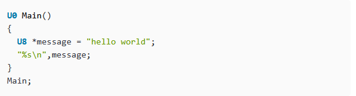
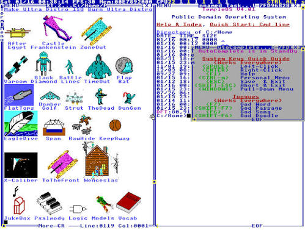

Инженерные решения TempleOS
Модель Ring-0 и бескомпромиссная память
В отличие от традиционных операционных систем, разделяющих адресное пространство на пространство пользователя и пространство ядра, TempleOS полностью функционирует в привилегированном режиме процессора — Ring 0.
В системе отсутствует аппаратная изоляция процессов, виртуальная память и механизм подкачки страниц на диск (paging/swap). Все запущенные задачи разделяют общее плоское адресное пространство с прямым сопоставлением физической памяти (identity mapping). Это исключает накладные расходы на переключение контекста и обращения к ядру через прерывания, давая коду максимальное быстродействие.
HolyC: компиляция «на лету» (JIT)

Системным языком TempleOS выступает собственный диалект HolyC. Язык сохраняет синтаксическую базу Си, дополняя её возможностями языков высокого уровня: значениями аргументов функций по умолчанию, встроенным ассемблером x86-64 и поддержкой прямого исполнения выражений вне процедур.
В HolyC стирается граница между языком программирования и командной оболочкой: консоль системы является циклом вычисления выражений, компилируемых «на лету» (Just-In-Time) непосредственно в машинный код. Для сборки ядра и утилит доступен режим опережающей компиляции (Ahead-Of-Time).
Разрешение 640×480 и 16-цветная палитра EGA

Графический вывод зафиксирован на аппаратном стандарте VGA: разрешение 640×480 пикселей при фиксированной 16-цветной палитре. Данное ограничение было выбрано сознательно ради абсолютной предсказуемости отрисовки на любом совместимом дисплее и быстроты рендеринга.
В систему встроен компактный программный 3D-движок, выполняющий геометрические трансформации и растеризацию полигонов силами центрального процессора. Звуковая подсистема принципиально не использует AC97, HD Audio или внешние звуковые платы: синтез звука ведётся через однобитный таймер системного динамика (PC-speaker) с генерацией чистых частот.
Подсистемы RedSea и DolDoc
Файловая система RedSea
Разработанная с нуля файловая система RedSea представляет собой непрерывную структуру размещения файлов, аналогичную ранним вариантам FAT, но оптимизированную под быстрое последовательное чтение больших блоков без фрагментации данных.
Интерфейс и формат документов DolDoc
Текстовый формат DolDoc объединяет обычный текст, разметку гиперссылок, интерфейсные виджеты, деревья каталогов и векторные 3D-спрайты в единый стандартизированный поток символов. Любой документ или исходный код в TempleOS может содержать интерактивные исполняемые элементы без применения внешних библиотек верстки.